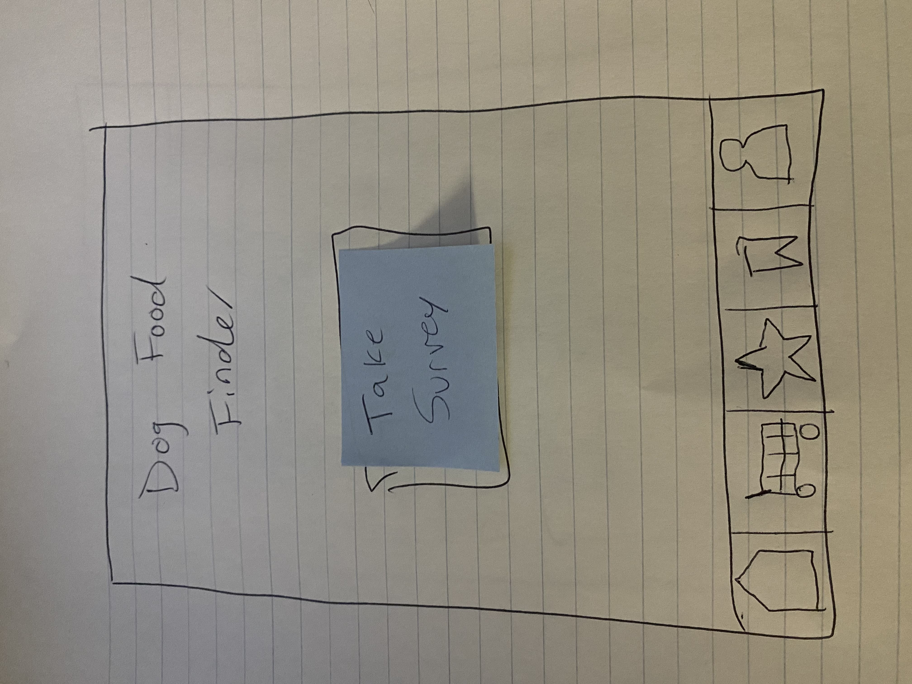
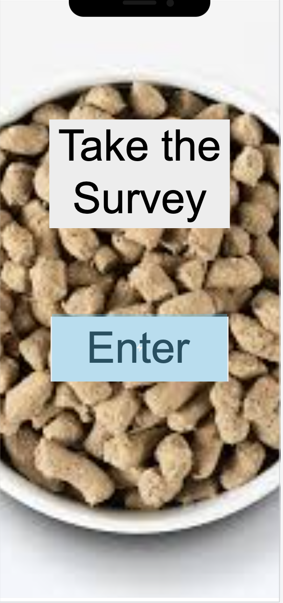
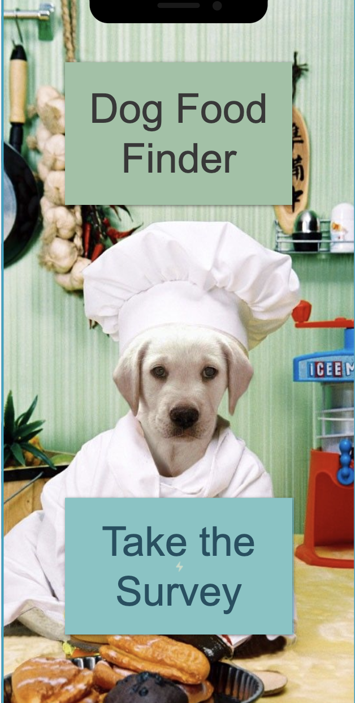

Problem Statement: Dog Food

The user’s problem is finding dog food that matches the pet’s nutrition it needs and at an affordable price. Our solution should provide the most nutritious food at the most affordable price.
Affinity Diagram: Dog Food

My group and I brainstormed everything about dog food.
Persona: Personas for dog food app

Personas for typical people who want healthy and affordable dog food options.
Storyboard: Storyboards for dog food app

Storyboards showing the need for the custom dog food app.
Sketches: Dog Food App

Sketches that could be app solutions to solve the dog food problem.
Paper Prototype: Dog Food App
A functional prototype on paper on how the app would work.
\Usability Testing Script: Dog Food App

A scenario and tasks and the outcome of usability tests.
Low-fi Prototype: Dog Food App
A low-fi prototype for the dog food app.
Hi-fi Prototype: Dog Food App
A hi-fi prototype for the dog food app.